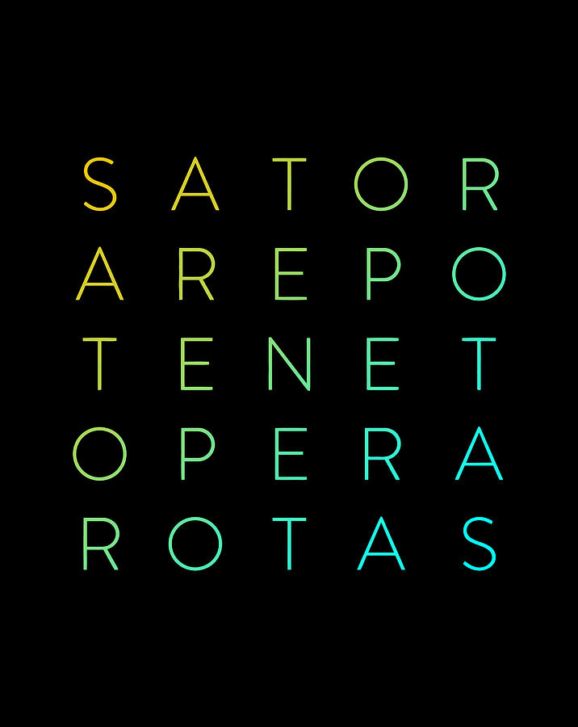

The SATOR Square is a historical example of several palindromes.
A palindrome is any text that can be written forwards or backwards - in the SATOR square, only the center Tenet is a true palindrome.